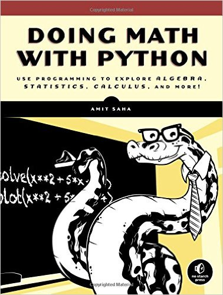

Matemáticas y python
#pyDayTF
Alberto Morales
Basado en...
Índice
Matemáticas básicas
>>> 2+3, 2-3, 2*3, 2/3 # operaciones basicas
(5, -1, 6, 0.6666666666666666)
>>> 4/2, 5/2, 6/2 # división decimal
(2.0, 2.5, 3.0)
>>> 4//2, 5//2, 6//2 # división de enteros
(2, 2, 3)
>>> 9 % 3, 10 % 3, 11 % 3 # resto de la división (módulo)
(0, 1, 2)
>>> 5**2, 2**10, 144**0.5 # potencias y raices
(25, 1024, 12.0)
Trigonometría
>>> from math import * # importamos todo el módulo, no PEP-8
>>> sin(90) # esto esta mal, pues es en radianes
0.8939966636005579
>>> sin(pi/2) # esto esta bien, en radianes
1.0
>>> sin(radians(90)) # convertir de grados a radianes
1.0
>>> cos(radians(90)), tan(radians(90)) # ~0 e ~infinito
(6.123233995736766e-17 , 1.633123935319537e+16)
>>> atan(1) # para que x, ¿tan(x) da 1? 0.78 radianes
0.7853981633974483
>>> degrees(atan(1)) # o convertido a grados
45.0
Fracciones
>>> from fractions import Fraction
>>> Fraction(5, 2)
Fraction(5, 2)
>>> Fraction(5, 2)+Fraction(3, 5)
Fraction(31, 10)
>>> Fraction(5, 2) / Fraction(3, 5)
Fraction(25, 6)
>>> Fraction(5, 2) / Fraction(3, 5) - Fraction(1, 6)
Fraction(4, 1)
Números complejos
>>> 2 + 3j + 5 + 6j # la 'j' es la 'i' imaginaria
(7+9j)
>>> (2 + 3j) * (5 + 6j)
(-8+27j)
>>> (2 + 3j) / (5 + 6j)
(0.4590163934426229+0.04918032786885245j)
>>> z = 2 + 3j
>>> type(z), z.real, z.imag, abs(z) # clase, parte real, imaginaria y módulo
(<class 'complex'>, 2.0, 3.0, 3.605551275463989)
Matplotlib
Librería dedicada a hacer gráficas
Muy útil la Galería porque trae muchos ejemplos complejos, cada uno con su código fuente
pylab: Inspirada en la sintaxis de MATLAB/Octave
Matplotlib (simple Y)
>>> from pylab import plot, show
>>> plot([6, 2, 5, 4, 1]) # datos de la Y
[<matplotlib.lines.Line2D object at 0x7f3b85528a10>]
>>> show() # y cerrar la ventana para continuar
Matplotlib (cuidado)
>>> from pylab import plot, show
>>> plot([4, 3, 2, 2, 5])
[<matplotlib.lines.Line2D object at 0x7f3b85528150>]
>>> plot([6, 2, 5, 4, 1])
[<matplotlib.lines.Line2D object at 0x7f3b855283d0>]
>>> show() # muestra dos, cerrarla
>>> show() # no muestra ninguna, cerrarla
Matplotlib (simple X Y)
>>> from pylab import plot, show
>>> plot([1, 2, 3, 4, 5], [6, 2, 5, 4, 1]) # datos de la X y de la Y
[<matplotlib.lines.Line2D object at 0x7f3b8551b890>]
>>> show()
Matplotlib (markers)
>>> from pylab import plot, show
>>> plot([1, 2, 3, 4, 5], [6, 2, 5, 4, 1], marker='o') # 'o', '*', 'x', '+'
[<matplotlib.lines.Line2D object at 0x7f3b8551b890>]
>>> show()
Matplotlib (ranges)
>>> from pylab import plot, show
>>> plot(range(2012, 2017), [6, 2, 5, 4, 1], 'ro-')
[<matplotlib.lines.Line2D object at 0x7f3b8551b890>]
>>> show()
Matplotlib (axis)
>>> from pylab import plot, axis, show
>>> plot(range(2012, 2017), [6, 2, 5, 4, 1], 'gx--')
[<matplotlib.lines.Line2D object at 0x7f3b8551b890>]
>>> axis()
(2012.0, 2016.0, 1.0, 6.0)
>>> axis(xmin=2010, ymin=0)
(2010, 2016.0, 0, 6.0)
>>> show()
Matplotlib (guardar)
>>> from pylab import plot, savefig # ojo!
>>> plot(range(2012, 2017), [6, 2, 5, 4, 1])
[<matplotlib.lines.Line2D object at 0x7f3b8551b890>]
>>> savefig("salida.png")
Matplotlib (subplot)
>>> from pylab import plot, subplot, show
>>> subplot(211) # En una rejilla 2 filas 1 columna, la posicion 1
>>> plot(range(2012, 2017), [6, 2, 5, 4, 1], 'ro--')
>>> subplot(212) # En una rejilla 2 filas 1 columna, la posicion 2
>>> plot(range(2012, 2017), [4, 3, 2, 2, 5], 'gx-')
>>> show()
Matplotlib (pyplot)
La forma aconsejada de usar esta librería, sin las limitaciones de MATLAB
import matplotlib.pyplot as plt
plt.figure(1)
plt.subplot(211)
plt.plot(range(2012, 2017), [6, 2, 5, 4, 1], 'ro--')
plt.axis([2010, 2020, 0, 10])
plt.xlabel(u'año')
plt.ylabel('medias de dia')
plt.subplot(212)
plt.plot(range(2012, 2017), [4, 3, 2, 2, 5], 'gx-')
plt.axis([2010, 2020, 0, 10])
plt.xlabel(u'año')
plt.ylabel('medias nocturnas')
plt.show()
Sympy
Librería dedicada a álgebra (symbolic math)
Muy útil la Ayuda porque la forman muchos módulos para tareas diferentes
Sympy (symbol)
La variable, la incógnita, el core
>>> from sympy import Symbol
>>> x = Symbol('x')
>>> x + x + 1
2*x + 1
>>> type(2*x)
<class 'sympy.core.mul.Mul'>
>>> type(2*x+1)
<class 'sympy.core.add.Add'>
Es decir, las incognitas y operaciones algebraicas pasan a ser clases de sympy.
Sympy (symbols)
Un atajo para definir más incógnitas de una vez
>>> from sympy import Symbol, symbols
>>> x = Symbol('x')
>>> y = Symbol('y')
>>> z = Symbol('z')
>>> # equivalente a ...
>>> x, y, z = symbols('x,y,z')
Es decir, las incognitas y operaciones algebraicas pasan a ser clases de sympy.
Sympy (sin hacer nada)
Hay operaciones básicas que sympy resuelve sin que se lo digas
>>> from sympy import Symbol, symbols
>>> x, y = symbols("x,y")
>>> x*y+x*y
2*x*y
>>> x*(x+x)
2*x**2
>>> x*y/y
x
Sympy (expandir y factorizar)
Para desarrollar y simplificar expresiones
>>> from sympy import symbols, factor, expand
>>> x, y = symbols("x,y")
>>> factor(x**2 - y**2)
(x - y)*(x + y)
>>> factor(x**3 + 3*x**2*y + 3*x*y**2 + y**3)
(x + y)**3
>>> expand((x - y)*(x + y))
x**2 - y**2
>>> expand((x - 1)*(x + 1)*(2*x+3))
2*x**3 + 3*x**2 - 2*x - 3
Sympy (evaluar)
En una f(x,y), evaluamos para un punto (x, y) concreto.
>>> from sympy import symbols
>>> x, y = symbols("x,y")
>>> f = x*x + x*y + x*y + y*y
>>> f.subs({x: 1, y: 2}) # evaluar en un punto f(1, 2)
9
Sympy (cambio de variable)
Sustituimos en una f(x,y) la x o la y por otra ecuación
>>> from sympy import symbols, simplify
>>> x, y = symbols("x,y")
>>> f = x*x + x*y + x*y + y*y
>>> f.subs({x: 1-y}) # cambio de variable x -> 1-y
y**2 + 2*y*(-y + 1) + (-y + 1)**2
>>> simplify(_)
1
>>> f.subs({x: 2-y**2}) # cambio de variable x -> 2-y**2
y**2 + 2*y*(-y**2 + 2) + (-y**2 + 2)**2
>>> simplify(_)
y**2 - 2*y*(y**2 - 2) + (y**2 - 2)**2
>>> expand(_)
y**4 - 2*y**3 - 3*y**2 + 4*y + 4
Sympy (despejando)
>>> from sympy import symbols, solve, pprint
>>> x, a, b, c = symbols("x,a,b,c")
>>> f = x**2 + 5*x + 4 # f(x) = 0
>>> solve(f, dict=True) # despeja (resuelve) x
[{x: -4}, {x: -1}]
>>> f = a*x**2 + b*x + c # f(x, a, b, c) = 0
>>> pprint(solve(f, x, dict=True)) # despeja x
⎡⎧ _____________⎫ ⎧ ⎛ _____________⎞ ⎫⎤
⎢⎪ ╱ 2 ⎪ ⎪ ⎜ ╱ 2 ⎟ ⎪⎥
⎢⎨ -b + ╲╱ -4⋅a⋅c + b ⎬ ⎨ -⎝b + ╲╱ -4⋅a⋅c + b ⎠ ⎬⎥
⎢⎪x: ─────────────────────⎪, ⎪x: ────────────────────────⎪⎥
⎣⎩ 2⋅a ⎭ ⎩ 2⋅a ⎭⎦
>>> pprint(solve(f, a, dict=True)) # despeja a
⎡⎧ -(b⋅x + c) ⎫⎤
⎢⎪a: ───────────⎪⎥
⎢⎨ 2 ⎬⎥
⎢⎪ x ⎪⎥
⎣⎩ ⎭⎦
Sympy (representando)
>>> from sympy.plotting import plot
>>> from sympy import Symbol
>>> plot(2*x**2 + 3*x)
>>> plot(2*x**2 + 3*x, (x, -5, 5))
Sympy (derivadas e integrales)
>>> from sympy import Symbol, Derivative, Integral
>>> Derivative(2*x**2+3*x+1, x).doit()
4*x + 3
>>> Derivative(2*sin(x)*x**2, x).doit()
2*x**2*cos(x) + 4*x*sin(x)
>>> Integral(4*x + 3, x).doit()
2*x**2 + 3*x
>>> Integral(sin(x)**2, x).doit()
x/2 - sin(x)*cos(x)/2
Scipy
Librería dedicada a aglutinar librerías científicas
Matplotlib y sympy están incluidas en ella.
Muy útil el Tutorial porque enlaza a todos los módulos de que dispone.
Scipy (módulos)
Si no sabes de lo que estoy hablando, es que no lo necesitas
- Integración (simpson, cuadratura gausiana, ...)
- Optimización (gradiente conjugado, mínimos cuadrados, etc)
- Interpolación (spline)
- Transformadas de Fourier (FFT, la del coseno DCT, y del seno DST)
- Procesamiento de señal (Filtros FIR, IIR, polos, ceros, etc)
- Algebra lineal (inversa, determinante, autovalores, LU, etc)
- Datos espaciales (triangulación, delaunay, voronoi)
- Estadística (distribuciones de probabilidad, muestreo)
- Procesamiento de imágenes multidimensional (filtrado, interpolado, morfologia, segmentado)
Sympy (symbol)
La variable, la incógnita, el core
>>> from sympy import Symbol
>>> x = Symbol('x')
>>> x + x + 1
2*x + 1
>>> type(2*x)
<class 'sympy.core.mul.Mul'>
>>> type(2*x+1)
<class 'sympy.core.add.Add'>
Es decir, las incognitas y operaciones algebraicas pasan a ser clases de sympy.
Numpy
La librería más importante para calculo vectorial/matricial
Muy útil el Índice por categorías porque enlaza a todos los módulos de que dispone.
Numpy (módulos)
Todo se trabaja con vectores y matrices
>>> import numpy as np
>>> a = np.arange(10).reshape(2, 3) # vector de 6 numeros consecutivos convertido a matriz de 2x3
>>> b = np.array([(1.5,2,3), (4,5,6)]) # matriz 2 filas y 3 columnas definida a mano
>>> c = np.sin(b) # calcular el seno() de todos los elementos
>>> d = c > 0.5 # matriz booleana que indica si los elementos son > 0.5
>>> e = c * d # producto elemento a elemento (valores * booleano: mascara)
>>> import matplotlib.pyplot as plt
>>> plt.imshow(c, cmap='gray')
>>> plt.show() # mostrar una matriz como una imagen en escala de grises
Pero tanta caña en 40 minutos
no puede ser bueno, así que paramos.
Gracias por resistir a este taller!!